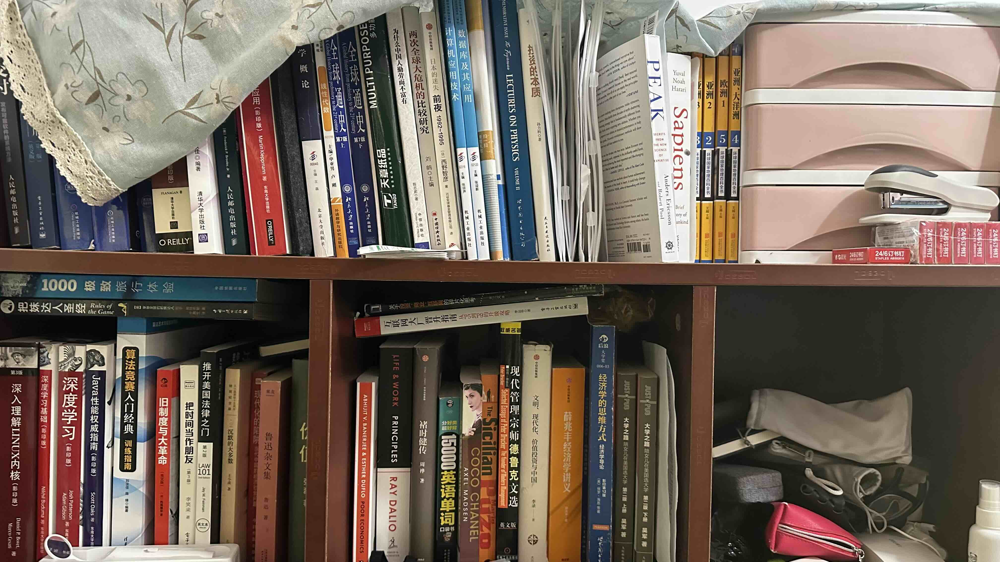

Chambre | Original, traduit par l'IA
Vue depuis la porte d’entrée
 Source : Capturé par moi-même
Source : Capturé par moi-même
- Meubles : Un lit superposé à cadre bleu.
- Électronique : Une télévision ou un moniteur sur un support.
- Textiles : Un rideau en arrière-plan.
- Accessoires : Un trépied ou un support à côté du moniteur.
- Sièges : Un petit tabouret ou une chaise sous le moniteur.
- Architecture : Une porte sur le côté droit.
Lit
 Source : Capturé par moi-même
Source : Capturé par moi-même
- Meubles : Un lit avec un ordinateur portable posé dessus.
- Rangement : Une étagère remplie de livres.
- Éclairage : Une petite lampe fixée à l’étagère.
- Literie : Un oreiller et quelques couvertures sur le lit.
- Objets : Quelques objets éparpillés sur le lit.
Bureau
 Source : Capturé par moi-même
Source : Capturé par moi-même
- Espace : Une zone encombrée avec plusieurs boîtes en carton.
- Électronique : Une tour d’ordinateur au sol.
- Câbles : Divers câbles et fils.
- Réseau : Un routeur ou un modem.
- Textiles : Une couverture ou un tissu rose sur le côté gauche.
Livres
 Source : Capturé par moi-même
- Livres : Une collection de livres, principalement des titres en chinois, avec quelques titres en anglais comme “Peak”, “Sapiens”, “The Wind-Up Bird Chronicle”, “Ray Dolby”, et “Coco Chanel”, ainsi que des livres de programmation, de littérature, de biographies et probablement des livres techniques.
- Autres : Une boîte de rangement rose, une agrafeuse, une petite boîte rose étiquetée, un sac en tissu, et de petits objets (probablement du matériel de bureau) dans le compartiment de droite.
Encombrement
 Source : Capturé par moi-même
Source : Capturé par moi-même
- Appareils électroniques : Un routeur Wi-Fi avec plusieurs antennes, un appareil électronique noir (probablement un modem), et des câbles Ethernet bleus et blancs.
- Boîtes : Plusieurs boîtes en carton de différentes tailles, une boîte contenant des composants électroniques, et une boîte avec une étiquette visible mais peu claire.
- Objets divers : Un tissu ou une serviette rose, un organisateur en plastique blanc avec des compartiments, et divers petits objets (probablement des outils et d’autres objets).
- Matériaux d’emballage : Du papier bulle et des sacs en plastique, ainsi que des objets encore dans leur emballage d’origine.